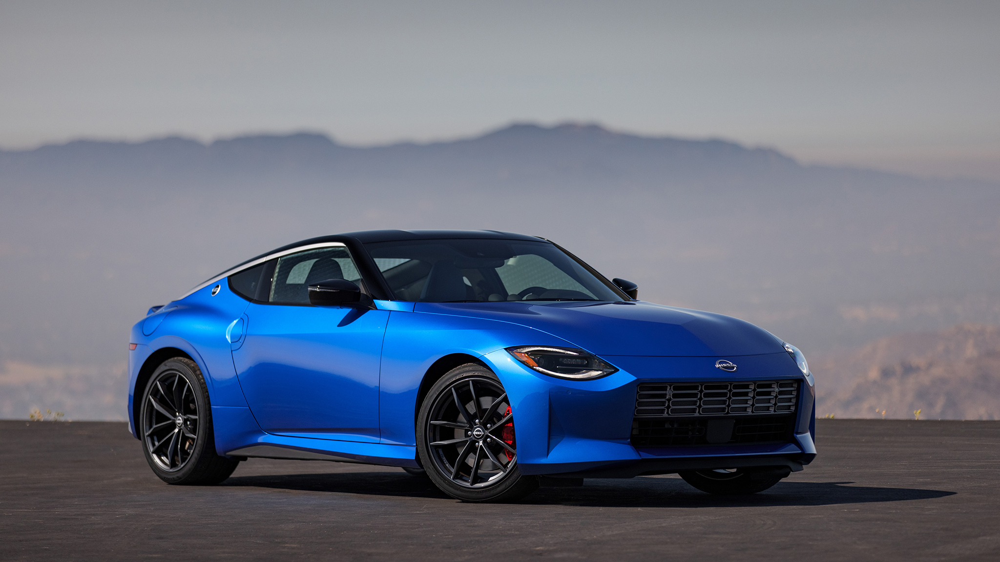
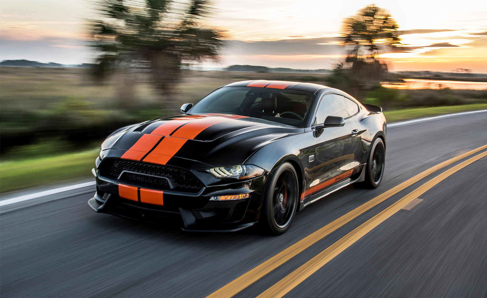
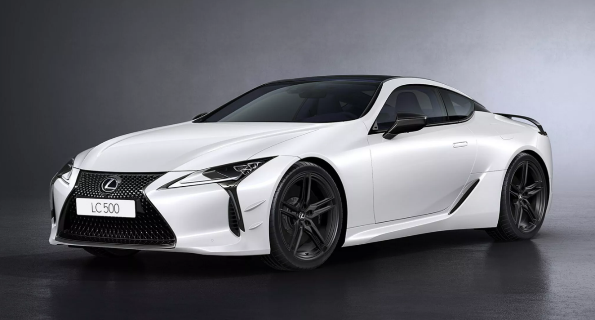
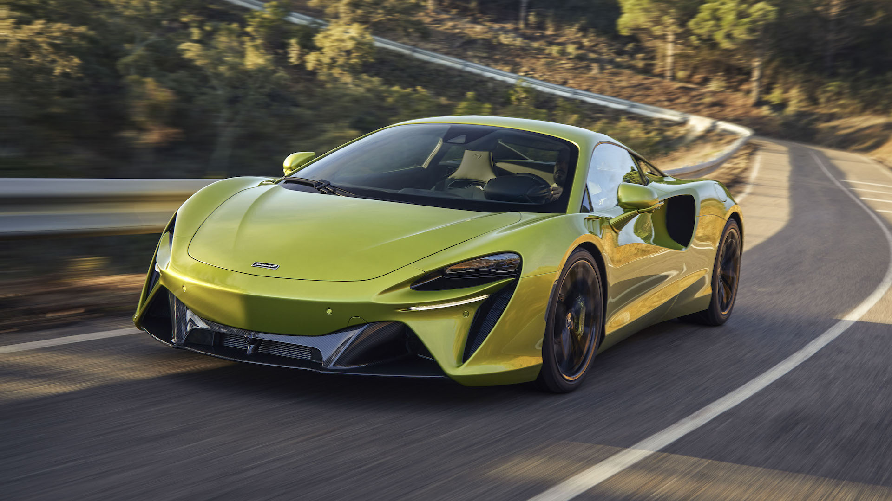

Кузов СПОРТКАР

Спорткар (Sports Car) – это автомобиль, созданный для динамичного вождения, высокой скорости и управляемости. В отличие от обычных машин, спорткары ориентированы на мощность, аэродинамику и спортивные характеристики, часто жертвуя комфортом ради драйва.
Основные характеристики:
- Мощный двигатель – высокий уровень лошадиных сил и крутящего момента.
- Низкий центр тяжести – улучшенная устойчивость и управляемость.
- Лёгкий вес – использование карбона, алюминия и облегчённых материалов.
- Жёсткая подвеска – для точного прохождения поворотов.
- Аэродинамика – активные спойлеры, воздухозаборники, антикрылья.
Классификация:

Nissan Z

Ford Mustang GT
- Лёгкие спорткары – компактные и манёвренные модели с умеренной мощностью (Mazda MX-5 Miata, Toyota GR86, Alpine A110).
- Классические спорткары – сбалансированные по мощности и весу машины (Porsche 718 Cayman, BMW Z4 M40i, Nissan Z, Toyota Supra).
- Маслкар – мощные спорткары с большим двигателем и агрессивным дизайном (Ford Mustang GT, Chevrolet Camaro SS, Dodge Challenger R/T).
- Гранд-туреры (GT) – быстрые, но комфортные спорткары для дальних поездок (Bentley Continental GT, Aston Martin DB12, Lexus LC500).
- Суперкары – продвинутые и мощные модели с экстремальной динамикой (Ferrari 296 GTB, Lamborghini Huracán, McLaren Artura).

Lexus LC500

McLaren Artura
Преимущества:
- Высокая мощность и динамика – быстрый разгон, высокая максимальная скорость.
- Отличная управляемость – спортивная подвеска, низкий центр тяжести.
- Эффектный дизайн – агрессивный стиль, аэродинамические элементы.
Недостатки:
- Меньше практичности – чаще всего жёсткая подвеска, маленький багажник.
- Высокая стоимость – не только при покупке, но и в обслуживании.
- Не всегда удобны в городе – низкий клиренс, жесткая подвеска.
Спорткар – это автомобиль для тех, кто ценит мощность, скорость и драйв. Они могут быть разными: от доступных и лёгких моделей до эксклюзивных суперкаров, но всегда ориентированы на спортивный характер и эмоции за рулём.